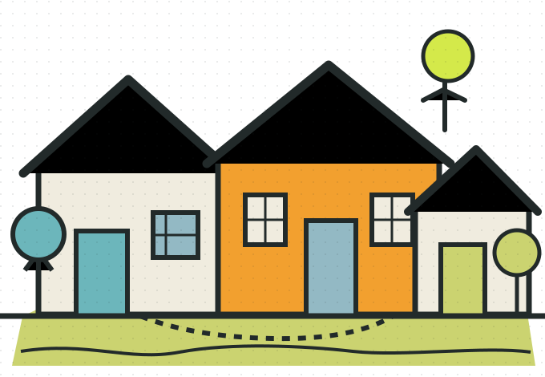

ILLUSTRATION / COMING LATER
BRINGING COMMUNITY TOGETHER TO REIMAGINE AFFORDABLE HOUSING & SUPPORT HOUSING STABILITY.
The Housing Commons brings community resources together to foster community ownership and bring the social function of housing back into focus. We make community ownership easier to understand, imagine, and build.

PEOPLE + PLACE + HOUSINGILLUSTRATION / REPLACEABLEFOLLOW THE CONNECTIONS
A COMMUNITY
IS A NETWORK.
Explore how housing, people, resources, and community ownership are connected.
EXPLORE THE COMMONSSelect a topic to see what it connects to.
FIELD NOTES / IDEAS FOR ANOTHER FUTURE
QUESTIONS WORTH EXPLORING.
These are planned editorial collections. They will connect questions about housing to explanations, examples, and community resources.
CASE STUDY / COMING LATER
HOUSING TOGETHER.
EXPLORE LEARNING AREAS ↗DIAGRAM / COMING LATER
WHY OWNERSHIP MATTERS.
READ THE PROJECT'S ARGUMENT ↗EXPLORE OWNERSHIP MODELS.
Discover different structures for long-term community stewardship and shared benefit.
FIND RESOURCES ACROSS NEBRASKA.
Explore organizations, programs, and housing-related resources on our interactive Nebraska map.